AQRCOMP · curso 2
2. Segmentación · AQRCOMP
2.1 Introducción a la Segmentación
2.1.1 Ciclo de Instrucción
El Ciclo de Instrucción son las etapas necesarias en un caso general para ejecutar cada instrucción. Etapas de ejecución:
- IF: Lectura de instrucción y actualización del registro contador de programa.
- ID: decodificación de la instrucción, lectura de registros, extensión de signo de desplazamientos y cálculo de posible dirección de salto.
- EX: operación de ALU sobre registros y cálculo de dirección efectiva de salto.
- MEM: Lectura o escritura en memoria.
- WB: Escritura de resultado en el banco de registros.
2.1.2 Implementación Monociclo
En MIPS, cada instrucción se ejecuta en un ciclo de reloj (CPI=1). Entonces, es muy importante decidir una longitud de ciclo de reloj adecuada. Como hay instrucciones con más etapas de ejecución que otras, se tendrá que escoger una longitud de ciclo que permita que se ejecute la más lenta. Como consecuencia, el resto de instrucciones tendrán tiempos muerto durante su ciclo de ejecución.
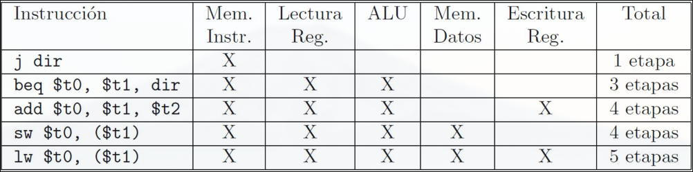
Opciones para reducir el ciclo de reloj:- Mejoras tecnológicas de los circuitos que permitan reducir el tiempo de ejecución de cada etapa.
- Mejoras de la organización del hardware que pueda ejecutar más de una instrucción al mismo tiempo.
2.1.3 Implementación Multiciclo
La implementación multiciclo y la segmentación son dos métodos de mejora de la organización del hardware.
En las implementaciones multiciclo cada etapa de ejecución se ejecuta en un ciclo. Para conseguirla hay que subdividir la unidad de ejecución y colocar registros entre etapas. Si permitimos lanzar a ejecutar una instrucción y mientras se ejecuta ir lanzando la siguiente, la implementación multiciclo se usa como una unidad segmentada (pipeline).
La segmentación se consigue a partir de una implementación multiciclo si se permite comenzar a ejecutar una instrucción mientras se ejecutan otras. Sin embargo, no todas las instrucciones terminan al mismo tiempo. Cuando dos instrucciones necesitan usar la misma unidad funcional se pueden producir conflictos (hazards). Los saltos pueden provocar paradas.
El objetivo es aprovechar todas las etapas a la vez para ir progresando en la ejecución de diferentes instrucciones simultáneamente.
- En cada instante habrá como máximo una instrucción en cada etapa.
- Idealmente se inicia una instrucción cada ciclo de reloj.
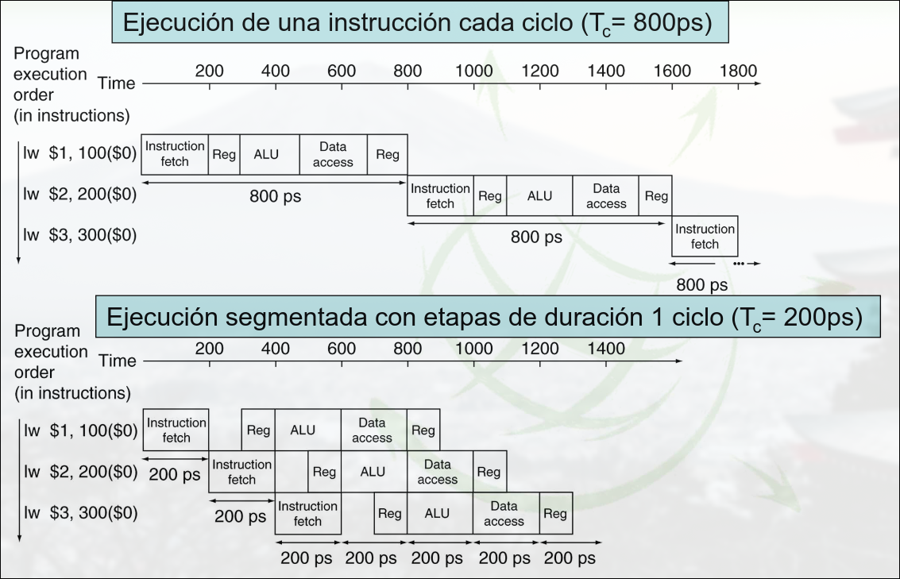
2.1.4 Tiempo del Pipeline
La complejidad del conjunto de instrucciones afecta directamente a la complejidad del pipeline. Una unidad convencional de ejecución de
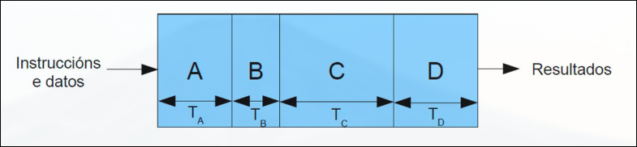
Una unidad segmentada con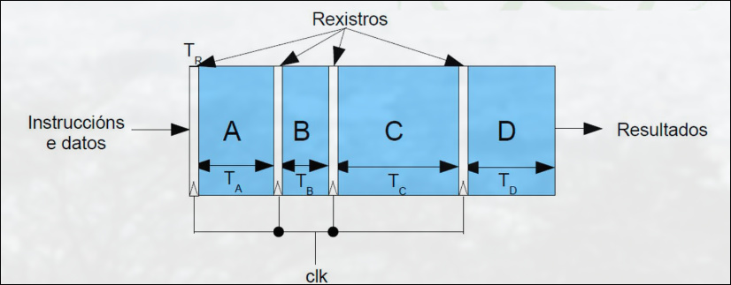
En cada ciclo de reloj se solapa la ejecución de diferentes instrucciones, de manera que, tras una latencia inicial igual al tiempo de ejecución de la primera instrucción, se obtiene una instrucción por ciclo (idealmente).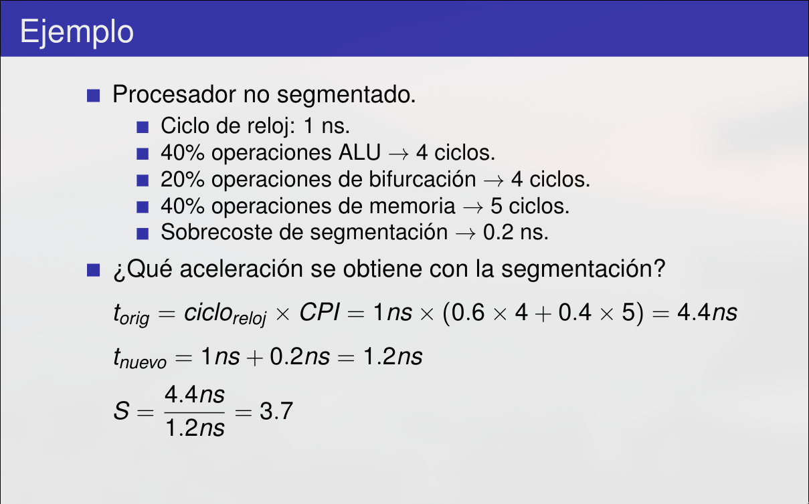
2.1.5 Fases del Pipeline
IF-Instruction Fetching
- Envío del PC a memoria
- Lectura de la Instrucción
- Actualización del PC
- En esta etapa se calcula el PC de la siguiente instrucción (útil recordarlo para los saltos que se explican después)
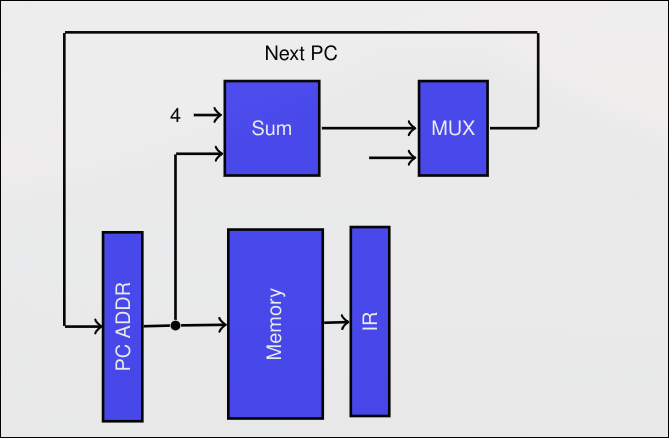
ID-Instruction Decodification
- Decodificación de Instrucciones
- Lectura de Registros
- Extensión de Signo de Desplazamientos
- Calculo de posible dirección de salto
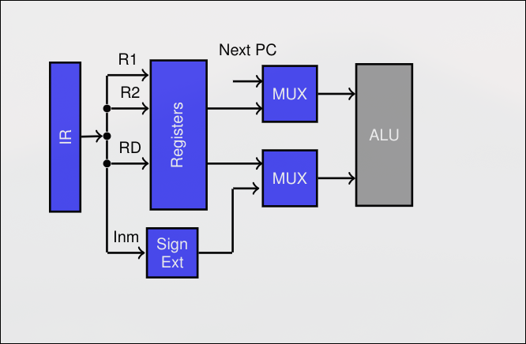
EX- Execution
- Operación de la ALU sobre registros
- Alternativamente, cálculo de la dirección de salto final
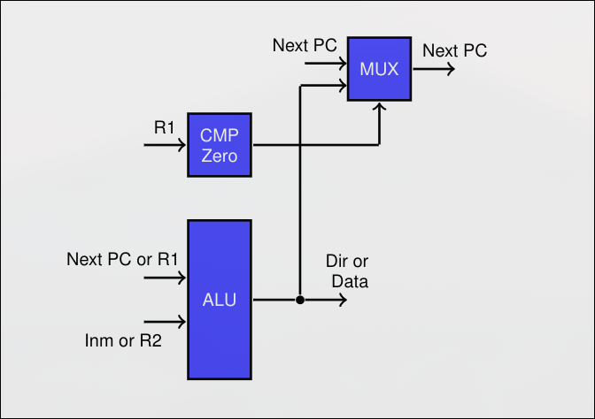
MEM- Memoria
- Lectura o escritura en memoria
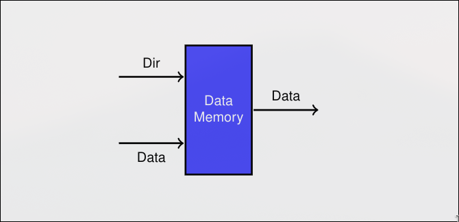
WB-WriteBack
- Escritura del resultado en banco de registros
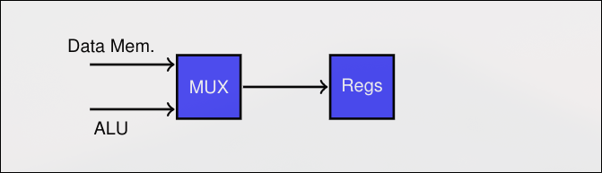
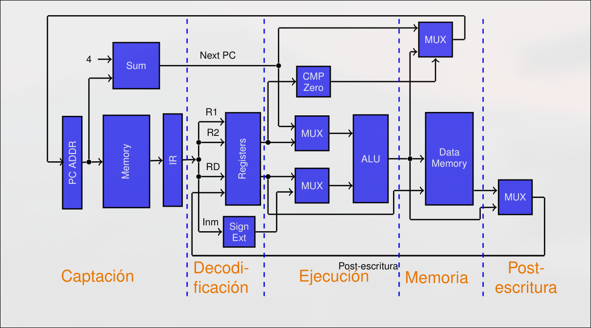
2.2 Riesgos en la Ejecución (Hazards)
Un riesgo es una situación que impide que la siguiente instrucción pueda comenzar en el ciclo de reloj previsto. Estas situaciones reducen el rendimiento de las arquitecturas segmentadas. Los riesgos pueden ser de tres tipos: estructurales, de datos o de control. La aproximación más simple (y menos eficiente) consiste en detener el flujo de instrucciones hasta que se elimina el riesgo.
El CPI ideal de un procesador segmentado es 1. Los ciclos del pipeline en los que no se computa se denominan burbujas del pipeline y en ellos se introduce en el pipeline un código de no operación (NOP).
2.2.1 Riesgos Estructurales
Los riesgos estructurales se producen cuando el hardware no puede soportar todas las posibles secuencias de instrucciones. Esto se produce si dos etapas necesitan hacer uso del mismo recurso hardware.
Las razones suelen ser la presencia de unidades funcionales que no están totalmente segmentadas o unidades funcionales no duplicadas. En general, los riesgos estructurales se pueden evitar en el diseño pero encarecen el hardware resultante.
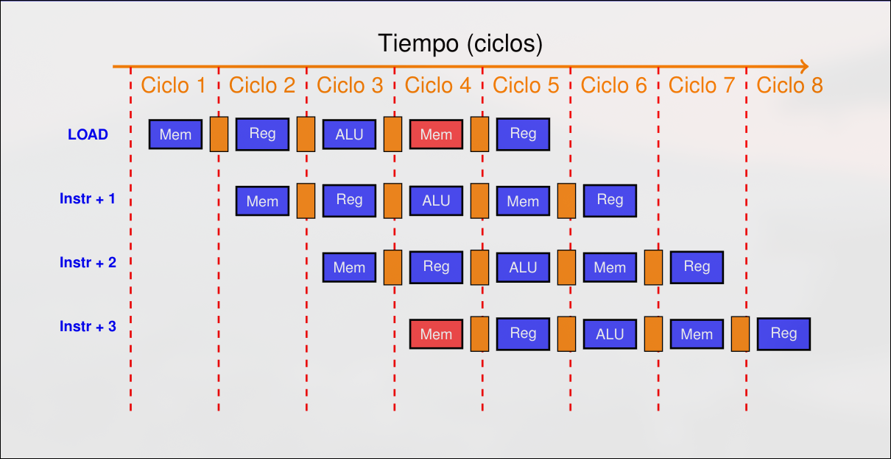
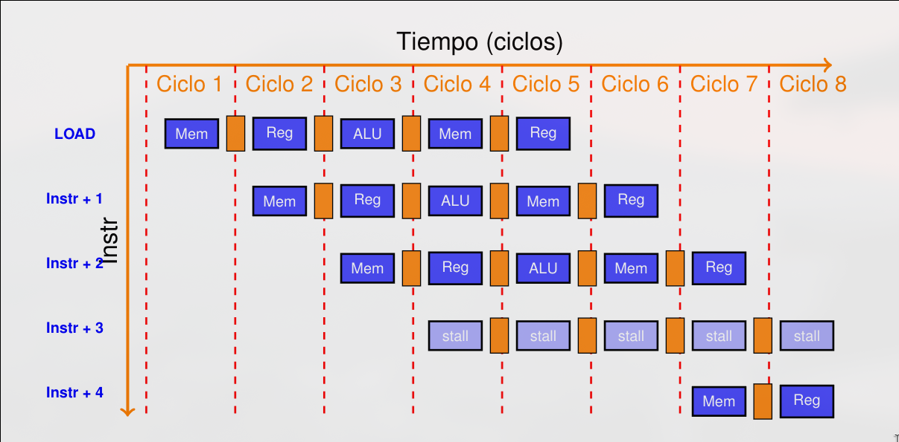
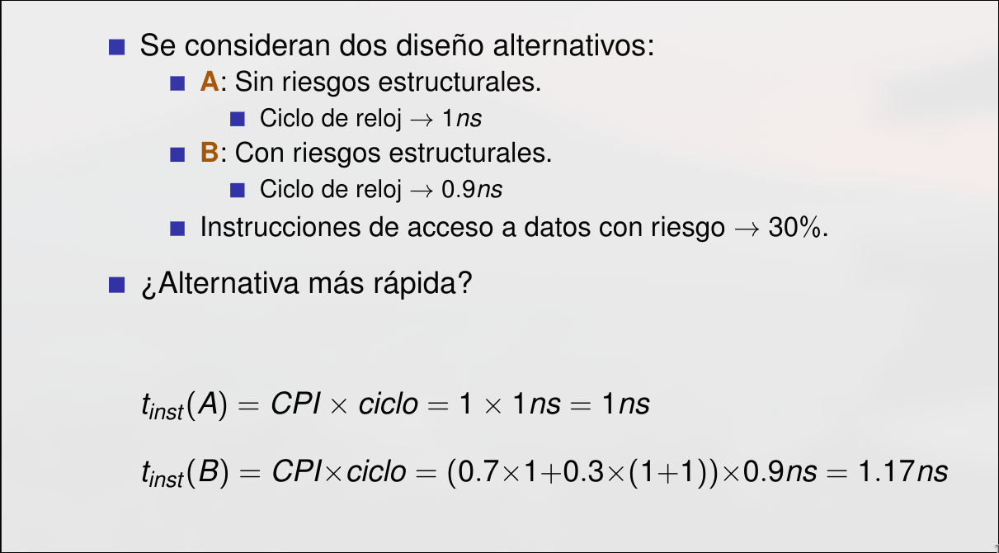
2.2.2 Riesgos de Datos
Un riesgo de datos se produce cuando la segmentación modifica el orden de acceso de lectura/escritura a los operandos. Los riesgos de datos pueden ser de tres tipos:
- RAW (Read After Write)
- WAR (Write After Read )
- WAW (Write After Write).
De estos tres, solamente los riesgos RAW pueden darse en una arquitectura de cinco etapas tipo MIPS. Los riesgos de tipo RAW pueden resolverse en algunos casos mediante el uso de la técnica del envío adelantado (forwarding).
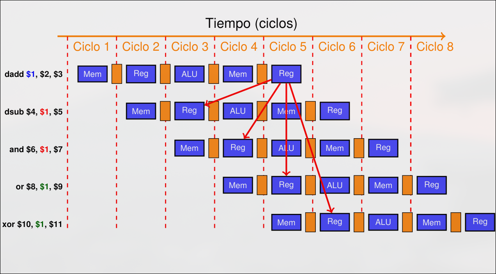
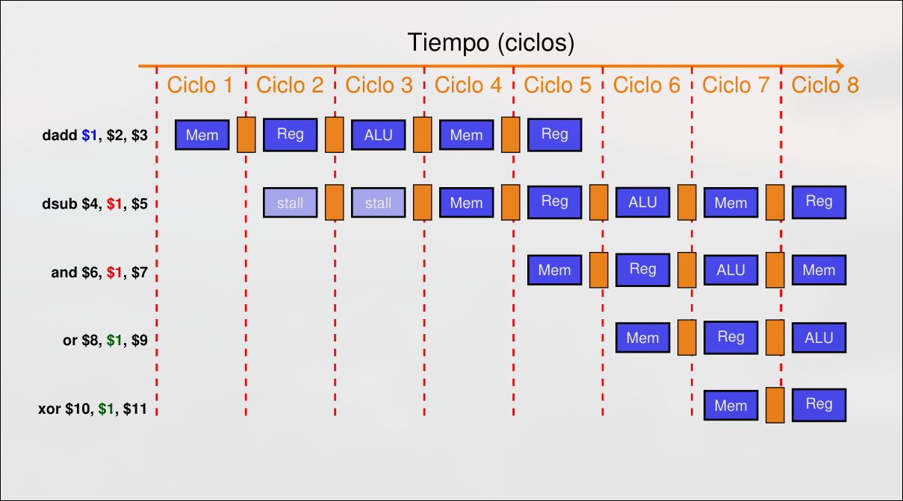
RAW - Read After Write
Una instrucción intenta leer un dato justo antes de que otra anterior lo escriba. Las instrucciones no pueden ejecutarse en paralelo ni solaparse completamente, provoca una parada. Se pueden detectas por hardware o por compilador
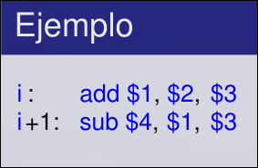
WAR - Write After Read
Una instrucción intenta modificar un dato antes de que otra anterior lo lea. No puede ocurrir en un MIPS con pipeline de 5 etapas ya que ID es la etapa 2 y WB es la 5, no provoca una parada.
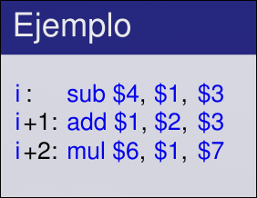
WAW - Write After Write
Una instrucción intenta escribir un dato antes de que otra anterior lo escriba. No puede ocurrir en un MIPS con pipeline de 5 etapas, pues estas siempre se ejecutan en el mismo orden, no provoca una parada.
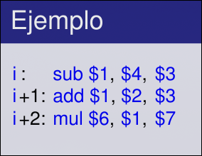
Soluciones
WAR o WAW: renombrado de registros.
- Renombrado estático: por el compilador
- Renombrado dinámico: por el hardware
RAW:
- Bloquear la instrucción hasta que se realice la escritura necesaria.
- El compilador reordena el código para mitigar el riesgo, introduce una secuencia de instrucciones independientes entre las conflictivas. Si no hay instrucciones independientes inserta instrucciones NOP.
- Envío adelantado (fowarding, bypassing, anticipación)
Fowarding
El fowarding consiste en enviar resultados de las últimas etapas del pipeline a las primeras para evitar esperas. Por tanto requiere conexiones adicionales.
No hace falta esperar a que el resultado se escriba en el banco de registros. Ya están en los registros de segmentación. Se puede usar ese valor en vez del que hay en el banco de registros.
Los resultados de las fases EX y MEM se escriben en registros de entrada a ALU. La lógica de forwarding selecciona entre entradas reales y registros de forwarding.
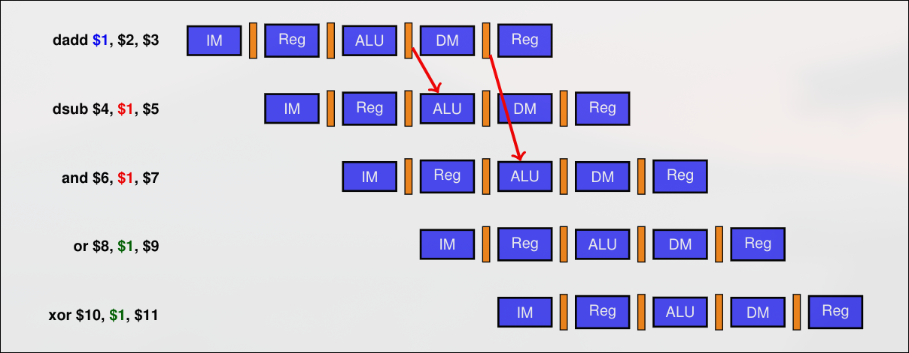
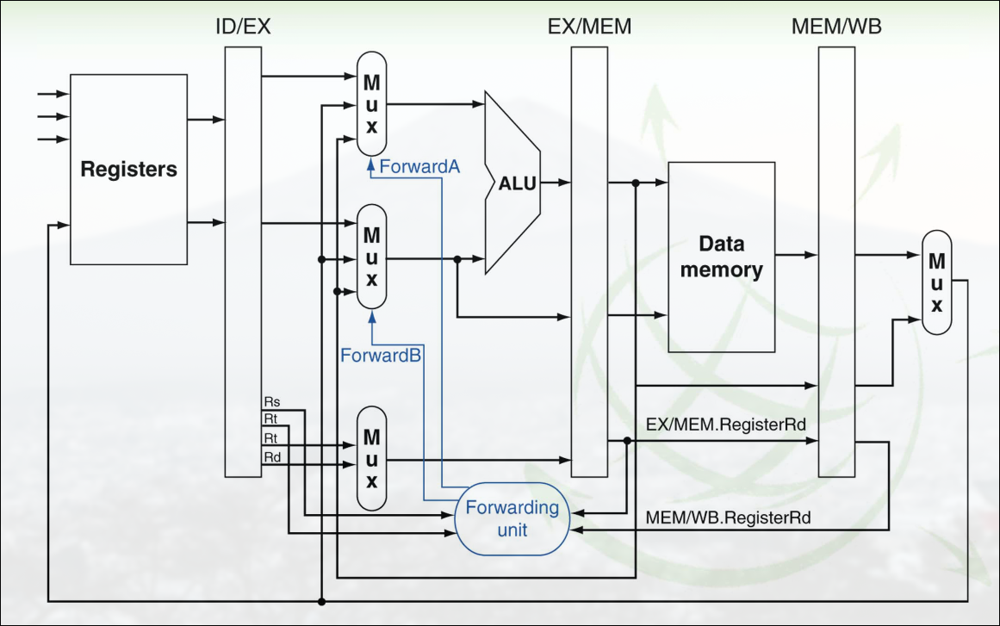
No todos los riesgos se pueden evitar con forwarding. Si el riesgo no se puede evitar se debe introducir una detención.
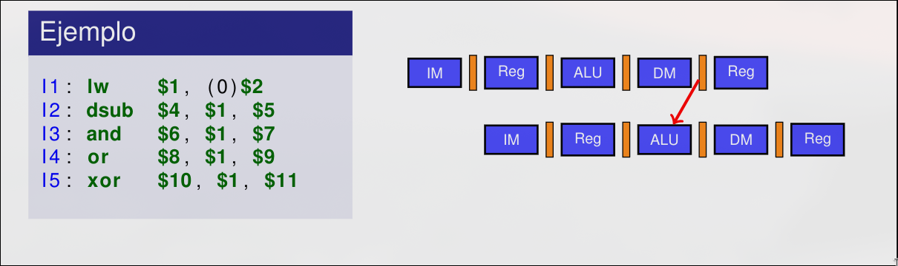
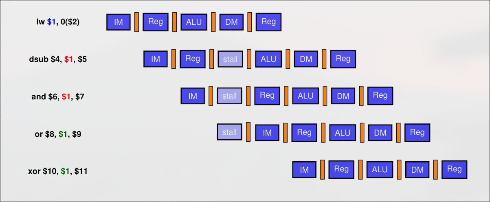
El control de interbloqueo de instrucciones es un proceso que consiste en detectar cuándo una instrucción no puede avanzar por dependencia en operandos con otra, aunque se aplique adelantamiento, provocando que se pare la emisión de instrucciones hasta que se solucione el bloqueo. La duración de la detección depende del tipo de instrucciones involucradas. Se detecta en la etapa ID pues en ella se averigua qué registros son operandos de entrada. Se activa una parada si:
- En la etapa ID hay una instrucción tipo ALU, salto o de almacenamiento.
- En la etapa EX se está ejecutando una carga
- El registro destino de la carga es operando de entrada de la instrucción que está en etapa ID
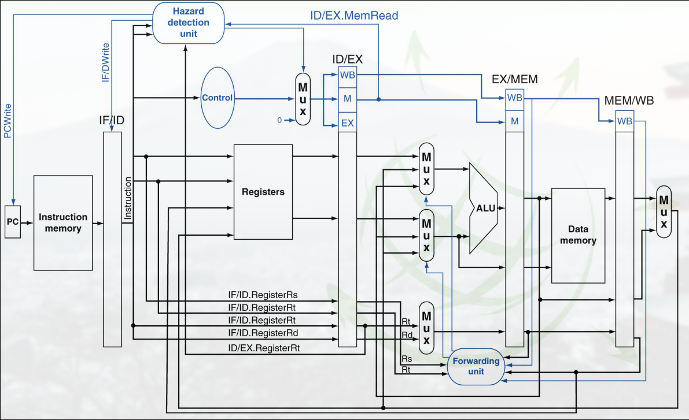
2.2.3 Riesgos de Control
Un riesgo de control se produce en una instrucción de bifurcación cuando no dispone todavía del valor sobre el que se debe tomar la decisión de salto. Los riesgos de control pueden resolverse en tiempo de compilación (soluciones estáticas) o en tiempo de ejecución (soluciones dinámicas).
Las soluciones estáticas ante los riesgos de control pueden ir desde la congelación del pipeline o la predicción prefijada (predecir siempre a no tomado o siempre a tomado), hasta el uso de bifurcaciones con ranuras de retraso.
Las soluciones dinámicas pueden usar una tabla histórica de saltos (BHT - Branch History Table) y una máquina de estados para realizar la predicción. De esta manera se tiene una máquina de estados asociada a cada entrada de la tabla.
Llamaremos salto tomado a la situación en la que se modifica el PC y salto no tomado a aquella en la que no se modifica.
Soluciones Estáticas
Congelar el Pipeline
Si la instrucción actual es una salto → parar o eliminar del pipeline instrucciones posteriores hasta que se conozca el destino. El destino de la bifurcación se conoce en la etapa ID e implica repetir el FETCH de la siguiente instrucción. Esta repetición equivale a una detención.
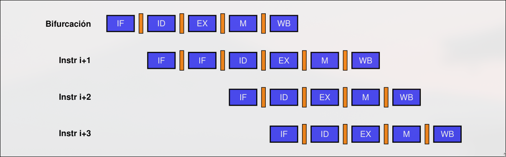
Prediccion Prefijada
No tomada
Asumir que el salto no será tomado. Se evita modificar el estado del procesador hasta que se tiene la confirmación de que el salto no se toma. Si el salto se toma, las instrucciones siguientes se retiran del pipeline y se capta la instrucción en el destino del salto. Transformar instrucciones en NOP.
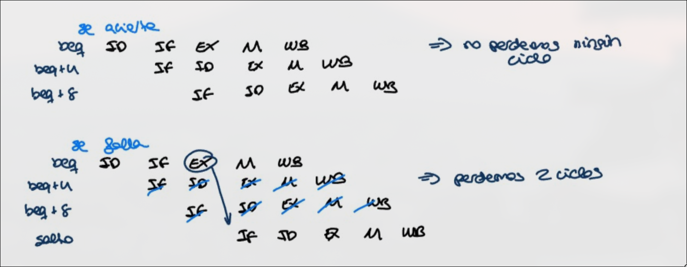
Tomada
Asumir que el salto será tomado. Tan pronto como se decodifica el salto y se calcula el destino se comienza a captar instrucciones del destino. En pipeline de 5 etapas no aporta ventajas. No se conoce dirección destino antes que decisión de salto. Útil en procesadores con condiciones complejas y lentas.
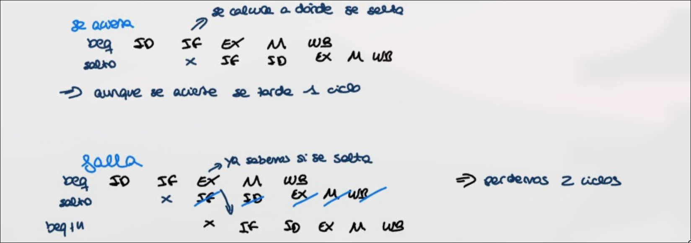
Decisión Retardada
La bifurcación se produce después de ejecutar las
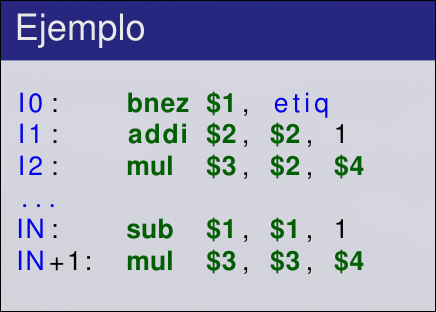
Las instrucciones
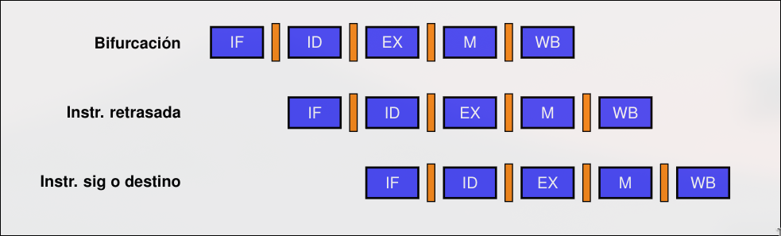
Caso de salto retrasada con una ranura de retraso. Se espera siempre una instrucción antes de tomar el salto. Es responsabilidad del programador poner código útil en la ranura.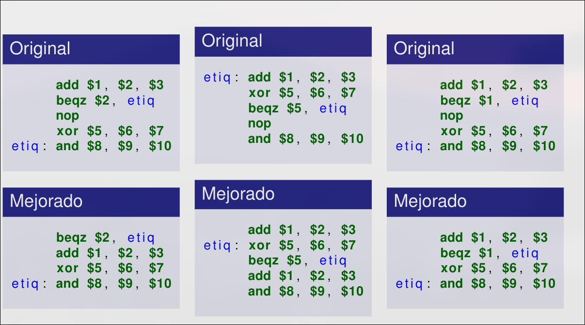
Soluciones Dinámicas
Robando un poco de info para variar
Las soluciones dinámicas pueden usar una tabla histórica de saltos (BHT - Branch History Table) y una máquina de estados para realizar la predicción. De esta manera se tiene una máquina de estados asociada a cada entrada de la tabla. Son muy útiles cuando usamos pipelines muy largos pero implican un alto coste hardware.
Predictor de 1 BIT
La idea es que si un salto fue efectivo, lo más probable es que vuelva a serlo en un futuro. Para aprovechar esto necesitamos un buffer de predicción de salto. Este buffer es una tabla de un único bit para anotar si el salto fue tomado o no tomado. A este buffer se accede mirando los lsb de la dirección del salto, y así sabemos si fue tomado o no. En caso de predicción errónea se invierten los bits.
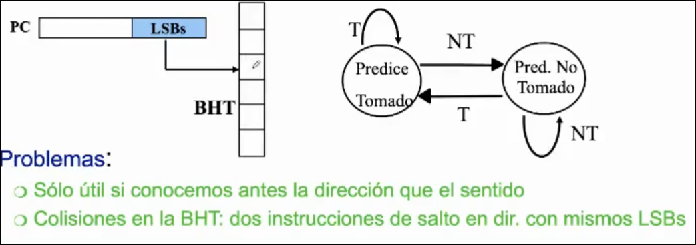
Si tenemos un bucle interno y otro externo, si el salto se toma siempre en el interno, por cada vez que itere el externo, va a volver a tener ese fallo el interno.
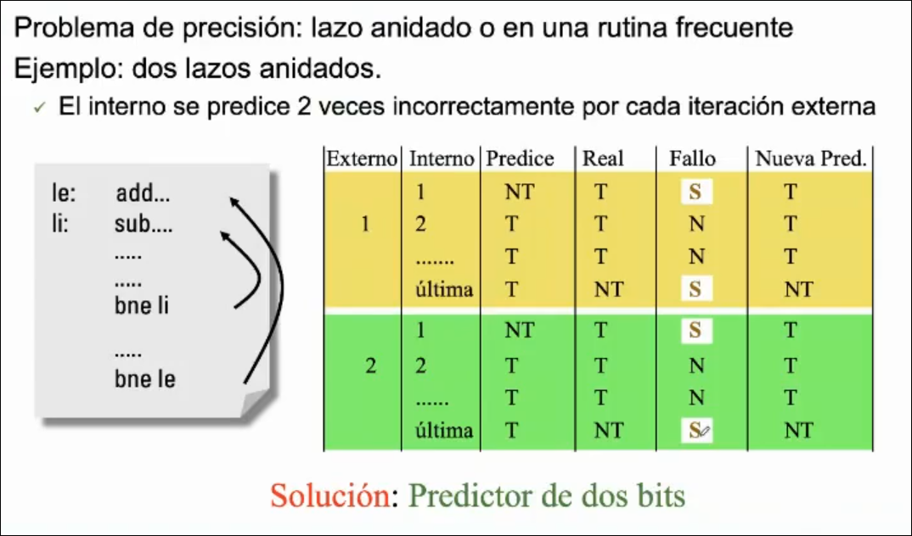
Predictor de 2 BITS
La idea es darle una segunda oportunidad antes de cambiar la predicción (inercia). BTH de 2 bits: cuatro estados posibles
Así le damos la oportunidad de reconsiderar sus errores y disminuir el número de fallos. Se puede generalizar para
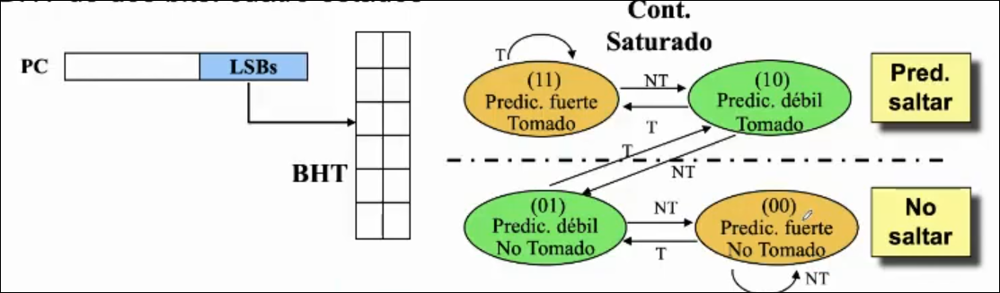
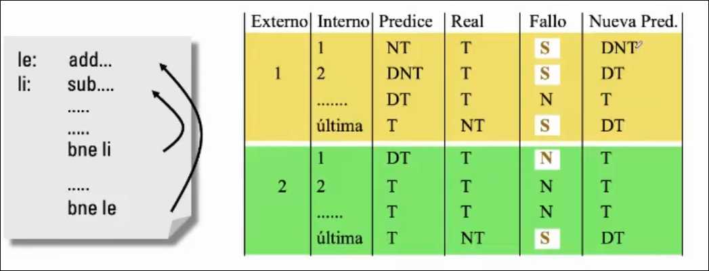
#### Predictor Basado en Información Local Tiene en cuenta la historia del comportamiento **de un mismo salto** para tomar la decisión. - Se almacena el resultado de cada salto correspondiente a sus últimas k ocurrencias - Con estos bits se accede a los bits de estado que informan de la predicción - Una vez conocido el resultado real del salto, se actualiza el contenido de la memoria de historia y el filtro de decisión - Una vez conocido el resultado real del salto, se actualiza el contenido de la memoria de historia y el filtro de decisión.Usa dos filtros de decisión y así evita el 100% de los fallos que sucederían al usar un predictor de 1 bit para secuencias tipo T NT T NT...
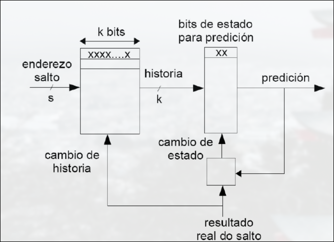
Predictor Basado en Información Global
Tiene en cuenta la historia del comportamiento de las últimas
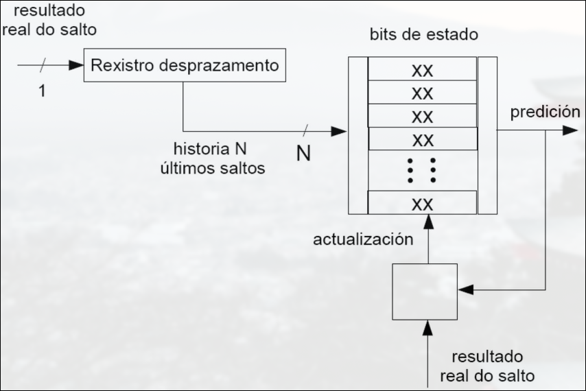
Predictor Combinado
Combina un predictor local y otro local. La tasa de acierto de los saltos en procesadores reales depende del tipo de programa y suele estas entre 85% y 99%
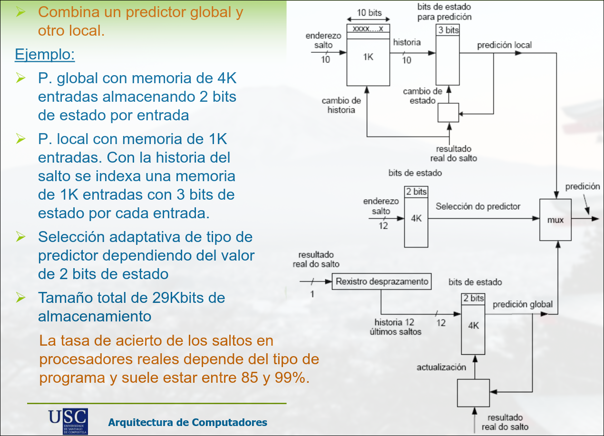
2.3 Operaciones Multiciclo.
La asignación de un único ciclo a las operaciones de coma flotante requiere un ciclo de reloj extremadamente largo o el uso de una lógica de coma flotante muy compleja (con el consiguiente consumo de recursos). La alternativa a estas opciones es la segmentación de la unidad de coma flotante, por lo que estas instrucciones requerirán múltiples ciclos en la etapa de ejecución.
Las instrucciones en punto flotante tienen la misma segmentación que las enteras, pero con las siguientes modificaciones:
- La etapa EX tiene diferente latencia dependiendo de la instrucción.
- Existen diversas unidades funcionales para cada tipo de operación.
Se añade un banco de registros separado para operaciones en punto flotante. Se añade una unidad de multiplicación segmentada de 7 etapas en enteros y punto flotante. Se añade una unidad de suma de 4 etapas en punto flotante. Se añade una unidad de división no segmentada que requiere varios ciclos reutilizando la misma etapa (en esta unidad no se puede ejecutar una instrucción por ciclo).
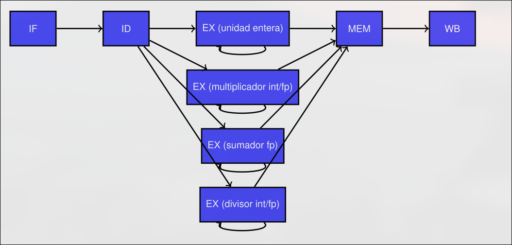
Chequeo de riesgos estructurales: hay que detectarlos en la unidad de DIV y en la etapa de WB. Para detectarlos:
- Para el paso de la instrucción a EX si es una división y hay otra división en ejecución.
- Para la emisión si se detecta que van a llegar al WB más instrucciones que puertas de acceso de escritura al banco de registros.
Chequeo de riesgos por dependencias RAW: similar al caso de pipeline simple con una única etapa de ejecución pero con más casos posibles.
Chequeo de riesgos por dependencias WAW: son poco comunes. Para detectarlos:
- Determinar si hay una instrucción en una etapa posterior a ID que tiene como destino el mismo registro que la etapa de ejecución, pero que haría la escritura del registro un número de ciclos posterior.
- Si sucede, para el paso a EX de la instrucción que está en una etapa posterior a ID.
2.4 Excepciones
Las excepciones se producen por diferentes eventos en la CPU (código de operación indefinido, overflows, syscalls,..) y requieren que el programa se ejecute de nuevo desde el punto en que se produjo la excepción.
Para poder restablecer el estado es necesario que se haya guardado el contenido de los registros y de la memoria.
- Las excepciones que permiten recuperar un estado anterior por completo se llaman excepciones precisas.
- Es complicado gestionarlas sin sacrificar el rendimiento, ya que reestablecer el estado del sistema significa almacenar información y perder ciclos.
Posibles soluciones:
- Incorporar un banco de registros adicional para ayudar a guardar los valores producidos por cada instrucción.
- Utilizar una rutina software que permita repetir la ejecución de instrucciones desde la que produjo la excepción.
- Parar la emisión de instrucciones si en la capa EX se detecta riesgo de excepción.
Si suceden múltiples excepciones anidadas, se gestiona la más antigua primera.
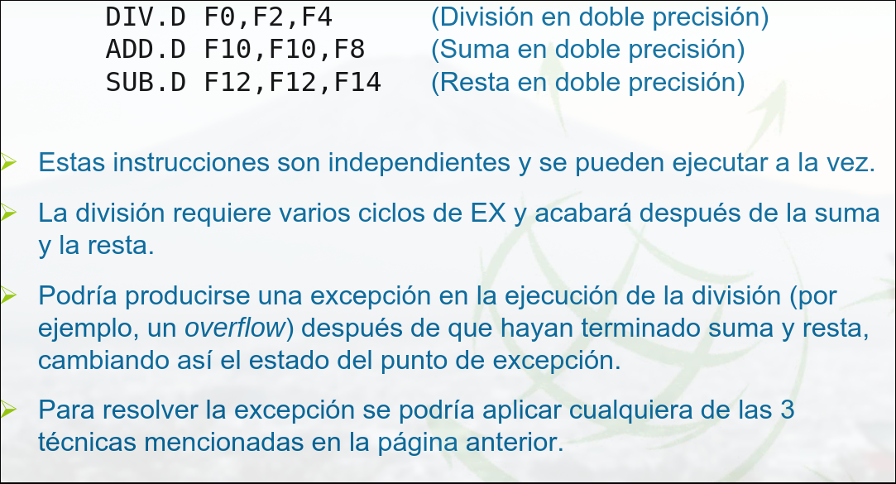
2.5 MIPS R4000 (Ha caído en examen)
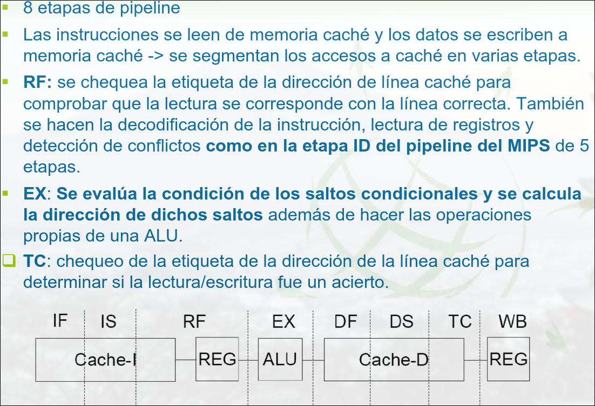
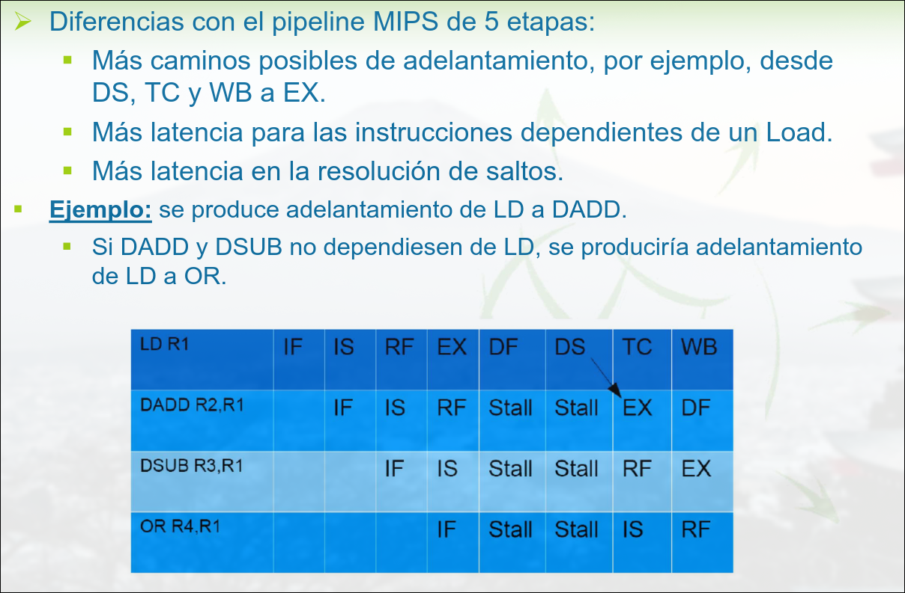
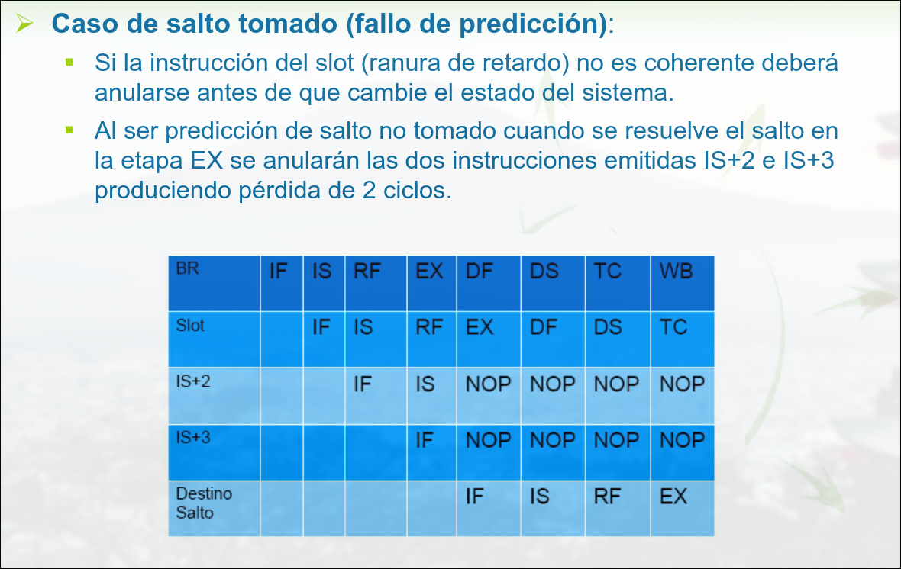